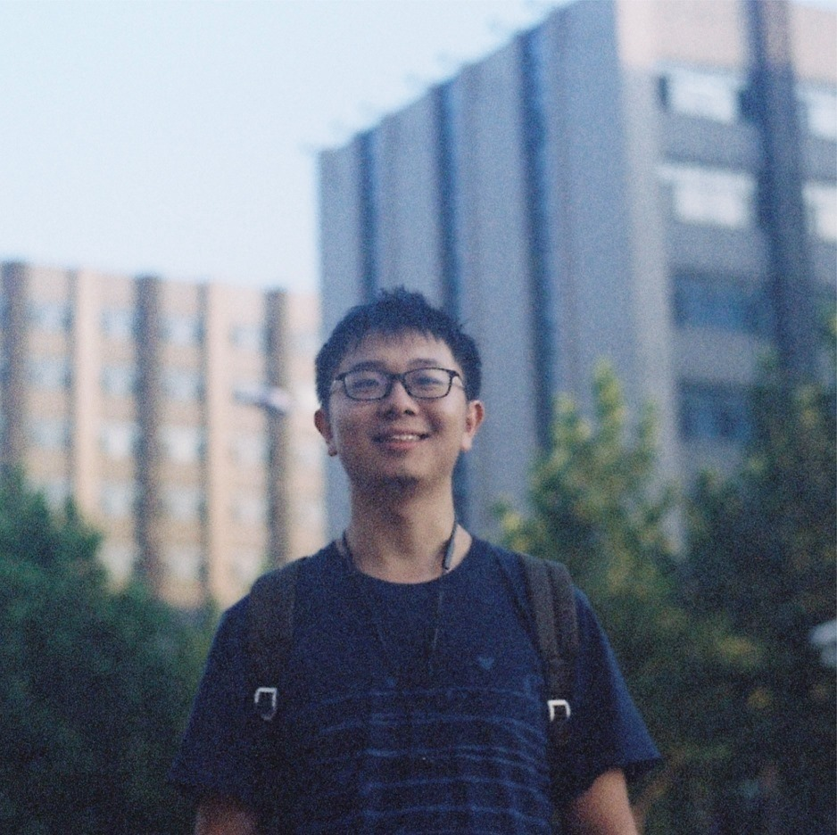

Research Scientist · Ph.D. Candidate
Yucheng Shi 史淯城
Tencent AI Lab, Seattle · University of Georgia (Ph.D. Candidate)
I work on Agent Reinforcement Learning and Self-Evolving AI — building systems that autonomously improve through environmental interaction and self-generated experience. My goal is to close the loop between acting, reflecting, and learning for next-generation AI agents.
Agent RL
Self-Evolving AI
Multimodal LLMs
RAG
Trustworthy AI

Latest
- 2026 / 02 Joined Tencent AI Lab (Seattle) full-time as Research Scientist, focusing on Agent RL and Self-Evolving AI.
- 2025 / 07 New preprint: MobileGUI-RL — online RL for mobile GUI automation. arXiv
- 2025 / 05 Papers accepted at ICML 2025 (CORTEX) and BIBM 2025. ICML
- 2025 / 04 Received Dissertation Completion Award Assistantship for 2025–2026. Award
- 2025 / 01 Three papers accepted at ICLR 2025. ICLR
- 2024 / 11 MKRAG received Distinguished Paper Award at AMIA 2024. Award
Experience
Tencent AI Lab (Seattle)
Research Scientist · Mentor: Dr. Wenhao Yu
Full-time research on Agent RL and Self-Evolving AI — designing agents that improve autonomously through environmental interaction and self-generated training signals.
Tencent AI Lab (Seattle)
Research Scientist Intern · Mentor: Dr. Wenhao Yu
- Developed mobile GUI agents via online trajectory-based reinforcement learning.
- Multimodal AI for mobile device automation and UI understanding.
Harvard Medical School
Student Researcher · Mentor: Dr. Xiang Li
- Post-trained LLaMA-3 70B on 6.5M+ MGH radiology reports using DeepSpeed.
- Built SearchRAG: decomposing complex medical questions into search-engine-friendly queries.
Publications
*Equal contribution. Full list on Google Scholar.
Agent RL & Self-EvolvingarXiv2025
MobileGUI-RL: Advancing Mobile GUI Agent through Reinforcement Learning in Online Environment
ICLR2025
TechReport
MGH Radiology Llama: A Llama 3 70B Model for Radiology
ICML2025
arXiv2025
SearchRAG: Can Search Engines Be Helpful for LLM-based Medical Question Answering?
CIKM2024